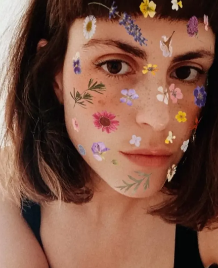

I'm Diana Guerreiro and I'm a front-end developer currently based in Lisbon, Portugal.
With a BA in Multimedia Art, a postgraduate in Art Criticism, Theories and Curatorial Studies, both from the Faculty of Fine Arts of Lisbon, a Web Design Course from the Lisbon School of Design, and a Front-end Development Course from SheCodes, works on web (design and) development, with a focus on exploring the possibilities at the intersection of creativity and technology. Mediating experimentation, sustainability and accessibility. Interested in multidisciplinarity and interdisciplinarity, interactivity, creative coding, playfulness and (visual) communication in times of shrinking attention spans.
